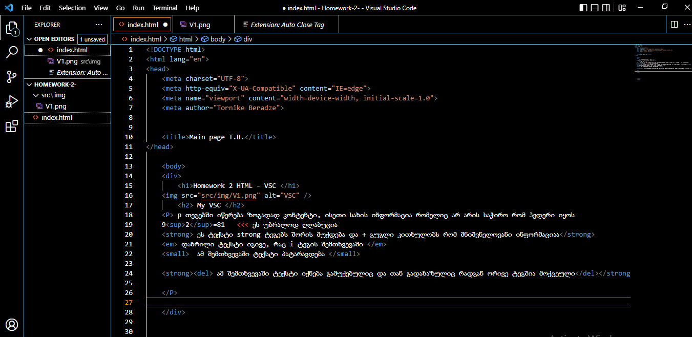

Homework 2 HTML - VSC

My VSC
p თეგებში იწერება ზოგადად კონტენტი, ისეთი სახის ინფორმაცია რომელიც არ არის საჭირო რომ ჰედერი იყოს
92=81 <<< ეს უბრალოდ ღლაბუცია
ეს ტექსტი strong ტეგებს შორის მუქდება და + გუგლი კითხულობს რომ მნიშვნელოვანი ინფორმაციაა
დახრილი ტექსტი იგივე, რაც i ტეგის შემთხვევაში
ამ შემთხვევაში ტექსტი პატარავდება
ამ შემთხვევაში ტექსტი იქნება გამუქებულიც და თან გადახაზულიც რადგან ორივე ტეგშია მოქცეული
